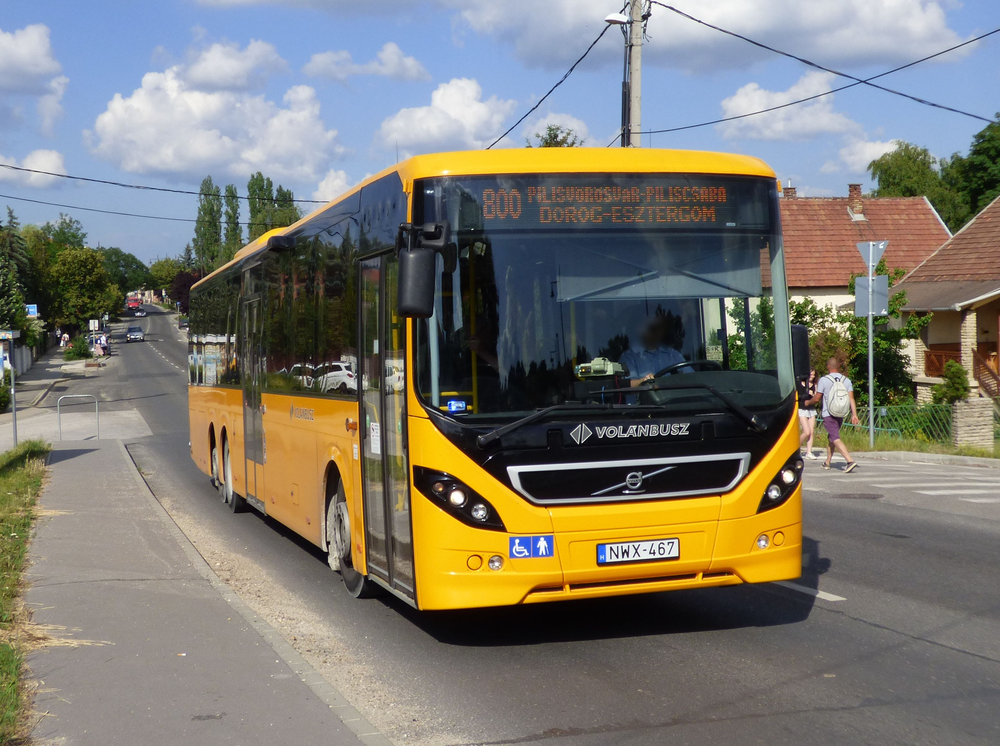
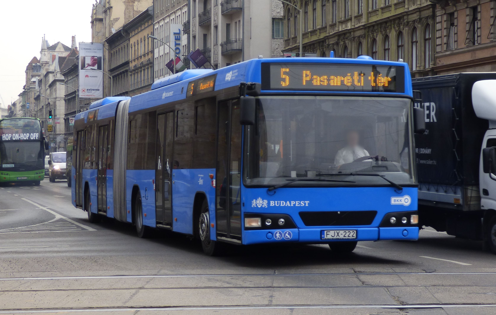
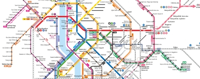

Buszmenetrend

- Budapest–Dunakeszi–Vác300, 302, 303 Füzetbe
- Göd–Dunakeszi, Barátság u.–Budapest301 Füzetbe
- Budapest–Dunakeszi, Auchan–Dunakeszi, Horányi rév305-306 Füzetbe
- Budapest–Dunakeszi–Fót–Budapest308-309 Füzetbe
- Budapest–Fót–Dunakeszi–Budapest310-311 Füzetbe
- Budapest–Rád–Penc–Nézsa312 Füzetbe
- Budapest–Őrbottyán–Vácrátót–Püspökszilágy313 Füzetbe
- Budapest–Őrbottyán–Vácrátót–Vácduka–Vác314 Füzetbe
- Budapest–Őrbottyán–Váchartyán–Püspökszilágy315 Füzetbe
- Budapest–Őrbottyán–Galgagyörk–Acsa–Bercel/Nógrádkövesd316 Füzetbe
- Gödöllő–Mogyoród–Fót–Budapest317 Füzetbe
- Budapest–Fót–Veresegyház–Galgamácsa318-319 Füzetbe
- Budapest–Fót–Mogyoród320 Füzetbe
- Budapest–HUNGARORING–Mogyoród321 Füzetbe
- Budapest–Szada–Veresegyház–Őrbottyán396-399 Füzetbe
- Budapest–Gödöllő–Bag–Tura400, 402 Füzetbe
- Budapest–Gödöllő–Hatvan410, 412 Füzetbe
- Budapest–Hatvan–Boldog–Jászfényszaru414 Füzetbe
- Budapest–Gödöllő–Aszód–Verseg–Kálló–Erdőkürt422, 424 Füzetbe
- Budapest–Aszód–Szirák–Bér430, 438 Füzetbe
- Budapest–Aszód–Szirák–Buják432, 434, 435 Füzetbe
- Budapest–Aszód–Vanyarc–Bér/Buják436, 437 Füzetbe
- Budapest–Aszód–Palotás–Hollókő439 Füzetbe
- Budapest–Gödöllő–Tóalmás440 Füzetbe
- Budapest–Gödöllő–Jászfényszaru441, 442 Füzetbe
- Budapest(Cinkota)–Nagytarcsa–Budapest(Cinkota)480 Füzetbe
- Nagytarcsa–Budapest (Rákoscsaba)–Nagytarcsa482 Füzetbe
- Budapest–Pécel–Isaszeg–Dány484 Füzetbe
- Budapest–Tápiószecső–Tápiószentmárton/Tóalmás–Szentlőrinckáta485-486 Füzetbe
- Kistarcsa–Rákoskeresztúr–Maglód–Gyömrő–Monor504 Füzetbe
- Budapest–Maglód–Gyömrő–Monor505-506, 508 Füzetbe
- Budapest–31-es út–Maglód–Gyömrő–Monor509-510 Füzetbe
- Budapest-Ecser-Maglód-Gyömrő-Maglód-Ecser-Budapest575 Füzetbe
- Budapest-Vecsés-Gyál-Vecsés-Budapest576-578 Füzetbe
- Budapest–Üllő–Monor580-581 Füzetbe
- Budapest–Inárcs–Újhartyán–Újlengyel607-608 Füzetbe
- Budapest–Alsónémedi–Dabas626 Füzetbe
- Budapest–Alsónémedi626-636 Füzetbe
- Dabas–Alsónémedi–Budapest627 Füzetbe
- Budapest–Dabas–Tatárszentgyörgy–Kerekegyháza628 Füzetbe
- Budapest–Dabas–Kunpeszér629 Füzetbev

Buszjáratok
- Budapest, Újpest-Városkapu XIII. ker. 04:50 05:20 05:50 06:20 06:50 06:55 07:20
- Budapest, Károlyi István u. 04:52 05:22 05:52 06:22 06:52 06:57 07:22
- Budapest, Zsilip utca 04:53 05:23 05:53 06:23 06:53 06:58 07:23
- Budapest, Tungsram 04:54 05:24 05:55 06:25 06:55 07:00 07:25
- Budapest, Fóti út 04:55 05:25 05:57 06:27 06:57 07:02 07:27
- Budapest, Ungvári u. 04:56 05:26 05:58 06:28 06:58 07:03 07:28
- Budapest, Bagaria u. 04:57 05:27 05:59 06:29 06:59 07:04 07:29
- Budapest, Vízművek 04:59 05:29 06:01 06:31 07:01 S 07:31
- Budapest, Székesdűlő 05:01 05:31 06:03 06:34 07:04 S 07:34
Budapest-bérlet szakaszhatár
- Dunakeszi, Székesdűlő ipartelep 05:02 05:32 06:04 06:36 07:06 S 07:36
- Dunakeszi, Vízművek bej. út 05:04 05:34 06:05 06:37 07:07 S 07:37
- Dunakeszi, vh. 05:06 05:36 06:08 06:40 07:10 07:20 07:40
- Dunakeszi, Szakorvosi Rendelő 05:07 05:37 06:09 06:41 07:11 07:21 07:41
- Dunakeszi, benzinkút 05:08 05:38 06:10 06:42 07:12 07:22 07:42
- Dunakeszi, templom 05:09 05:39 06:11 06:44 07:14 07:24 07:44
- Dunakeszi, Liget u. 05:10 05:40 06:12 06:45 07:15 07:25 07:45
- Dunakeszi, sportpálya 05:11 05:41 06:13 06:46 07:16 07:26 07:46
